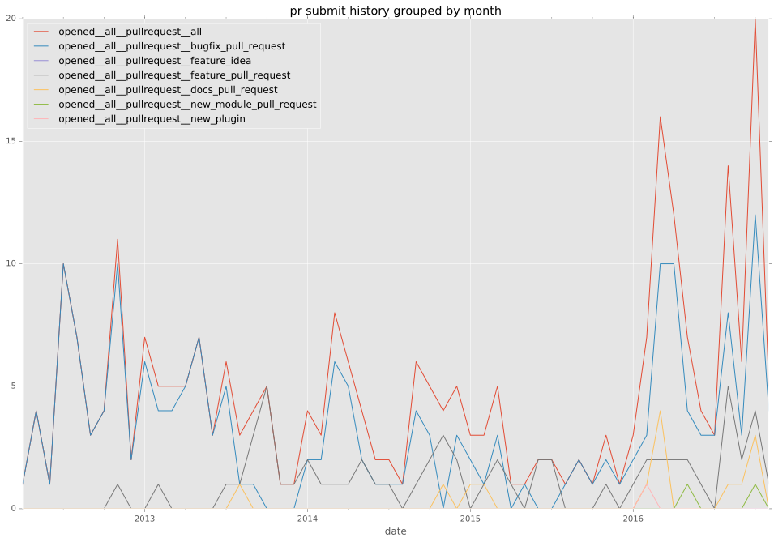
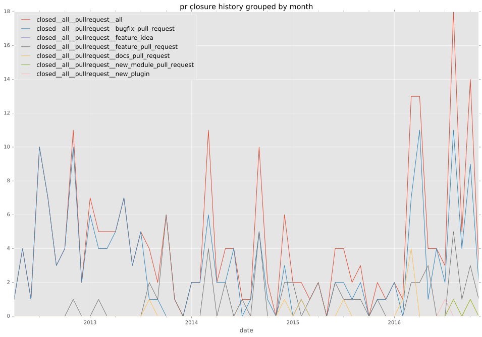

authors
maintainers
- ansible
contributors
- jctanner : 70 commits
- sfromm : 63 commits
- abadger : 47 commits
- robinro : 42 commits
- cg-brickhead : 20 commits
- mscherer : 17 commits
- dagwieers : 16 commits
- mpdehaan : 14 commits
- rohanpm : 11 commits
- benjixx : 11 commits
- Erethon : 11 commits
- rcutmore : 10 commits
- sayap : 9 commits
- jimi-c : 9 commits
- intellectronica : 6 commits
- bibliotechy : 6 commits
- jpmens : 4 commits
- ajsalminen : 4 commits
- sevein : 3 commits
- patrickheeney : 3 commits
- jbgo : 3 commits
- gundalow : 3 commits
- dyroffk : 3 commits
- dsummersl : 3 commits
- psvo : 2 commits
- eval : 2 commits
- bcoca : 2 commits
- toopy : 1 commits
- streeter : 1 commits
- skyl : 1 commits
- resmo : 1 commits
- pixelrebel : 1 commits
- nybble73 : 1 commits
- mspaulding06 : 1 commits
- mrbanzai : 1 commits
- mavimo : 1 commits
- lonerr : 1 commits
- drewblas : 1 commits
- dhoss : 1 commits
- chrisberkhout : 1 commits
- awiddersheim : 1 commits
- andreaskern : 1 commits
- Xerkus : 1 commits
- Labutin : 1 commits
- CptLausebaer : 1 commits
- Anufant : 1 commits
total issue counts
unknown: 2
feature pull request: 36
docs report: 5
pullrequest: 180
docs pull request: 12
bugfix pull request: 130
feature idea: 15
issue: 119
bug report: 99
issue history

pullrequest history


days open by issue type
bugfix pull request
count: 205
std: 70.8136432531
min: 0
max: 526
median: 0.0
mean: 18.8731707317
all
count: 375
std: 109.620601392
min: 0
max: 652
median: 1.0
mean: 40.9093333333
pullrequest
count: 0
std: nan
min: nan
max: nan
median: nan
mean: nan
docs pull request
count: 21
std: 13.4149880642
min: 0
max: 44
median: 2.0
mean: 7.52380952381
docs report
count: 5
std: 191.160142289
min: 0
max: 447
median: 10.0
mean: 119.8
feature pull request
count: 46
std: 92.2464353291
min: 0
max: 381
median: 16.0
mean: 61.8695652174
feature idea
count: 12
std: 208.534060876
min: 0
max: 582
median: 28.5
mean: 132.5
issue
count: 0
std: nan
min: nan
max: nan
median: nan
mean: nan
bug report
count: 83
std: 159.29815856
min: 0
max: 652
median: 5.0
mean: 75.5903614458
closures grouped by total days open